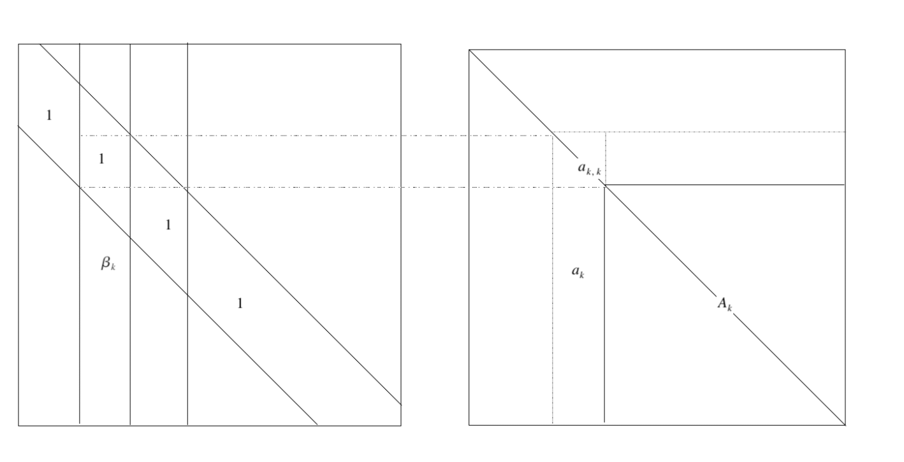

Paper 15 Parsimonious Covariance Matrix Estimation for Longitudinal Data
(Smith and Kohn 2012)
15.1 Abstract
Data-driven method to identify parsimony in the covariance matrix of longitudinal data and to exploit any such parsimony to produce a statistically efficient estimator of the covariance matrix. Use MCD. Off-diagonal elements of Cholesky factor is likely to be zero. Use hierarchical Bayesian model to identify zeros in Cholesky factor.
15.2 Introduction
Model for covariance matrix of multivariate Gaussian longitudinal data. MCD: \(e \sim N(0, \Sigma)\). \[ \Sigma^{-1}=B D B^{\prime} \] The factor B can be interpreted as \(B^{\prime} e=\zeta\). To flexibly identify zeros in the lower triangle of \(B\), place a hierarchical prior on it. \[ \zeta\sim N(0,D^{-1}) \]
突然想起来Bickel还是谁的那篇，好像也是这个思路？但是晚了6-7年。
This work is related to that on Gaussian covariance selection models, also called Gaussian graphical models, that studies covariance matrices with patterns of zeros in the inverse. However, parsimony in the Cholesky factor \(B\) does not imply equivalent parsimony in the graphical model, and vice versa.
“The work of Pourhamadi (1999,2000) is closest to ours”. He used the modififed Cholesky decomposition \(\Sigma^{-1}=B'DB\), and modeled the strict lower-triangular elements of B as linear functions of explanatory variables. The approach of Pourhamadi subsumes many of the models used for a covariance matrix in longitudinal data, including autoregressive and antedependence models. The interpretation of the Cholesky decomposition for longitudinal data are stressed, also here. However, pourhamadi’s approach differs from ours because it is parametric and does not attempt to formally identify any structural zeros. He also estimated his model by maximum likelihood and did not average over models. In contrast, the Bayesian approach provides a framework for averaging over parsimonious configurations of B, and inference is based on the finite sample posterior distribution.
An alternative factorization of the covariance matrix used by a number of authors is the psectral decomposition, \(\Sigma=O'\Lambda O\) where \(O\) is the orthonormal matrix of eigenvectors and \(\Lambda\) is the diagonal matrix of corresponding eigenvalues. The matrix \(O\) is further decomposed into a product of Given rotation matrices, so that \(\Sigma\) is parameterized in terms of its eigen-values and Givens angles.
Yang and Berger (1994) placed a reference prior on the Givens angles and eigenvalues and used it to carry out Bayesian inference on \(\Sigma\).
HPC also use Givens angles, but different way. What’s the relationship between these two methods?
However, it does not identify any specific parsimonious structure in the covariance matrix or its inverse, which is an objective of our approach for covariance matrices arising in longitudinal data.
This paper proposed method can efficiently estimate the covariance matrix and its inverse when the Cholesky factor is sparse or has elements close to szero. Performance is shown to be competitive with Yang and Berger (1994), which is recognized as one of the most statistically efficient covariance matrix estimators in the current literature.
不要再抄了T.T
- The first example is an analysis from a longitudinal repeated-measure experiment on the live weight of a sample of cows from Diggle, Liang, and Zeger(1994,p.100).
- The second example uses an econometric model,
- The last example considers a multivariate capital asset pricing model.
Section 2: Bayesian hierarchical model. Section 3: Bayesian inference, sampling scheme Section 4: Simulation study Section 5: Real data analysis Section 6: Summarizes
15.3 The model and prior:
Suppose \(e_{1}, \ldots, e_{n}\) are n vectors with dimension m follows normal distribution \(N(0,\Sigma)\). This section and the next consider modeling and estimating the \(m\times m\) covariance \(\Sigma\).
Factor the inverse of the covariance matrix \(\Sigma^{-1}=\{\sigma^{i,j}\}\) into a full-rank \(m\times m\) matrix \(B=\{b_{i,j}\}\) and diagonal matrix \(D=diag\{d_1,...,d_m\}\). To allow parsimony in the representation, each of the lower triangular elements of \(B\) can be exactly zero with positive probability. This is achieved by introducing binary indicator variable \(\gamma_{i,j}\), so that \[ b_{i, j}=0 \quad \text { iff } \quad \gamma_{i, j}=0 \] and \[ b_{i, j} \neq 0 \quad \text { iff } \quad \gamma_{i, j}=1 \] for elements \(j=1,...,m-1\),\(i>j\). Then the Cholesky factor \(B\) is known only conditional on the “model parameter”\(\gamma=\left\{\gamma_{i, j} | j=1, \ldots, m-1 ; i>j\right\}\).
For the autoregressive process, \(B\) is a band matrix.
15.3.1 Likelihood
When the mean is 0, the likelihood for \(B,D,\gamma\) is \[ \begin{array}{l}{p(e | B, D, \gamma)} \\ {\qquad=(2 \pi)^{-n m / 2}|D|^{n / 2} \exp \left\{-\frac{1}{2} \sum_{i=1}^{n} e_{i}^{\prime} B D B^{\prime} e_{i}\right\}} \\ {=(2 \pi)^{-n m / 2} \prod_{i=1}^{m}\left(d_{i}\right)^{n / 2} \exp \left\{-\frac{1}{2} \sum_{k=1}^{m} d_{k} b_{k}^{\prime} A b_{k}\right\}}\end{array} \] The matrix A is positive definite almost surely if \(m\leq n\).
The quadratic form in the likelihood can be written in terms of a quadratic function of \(\beta_k\), so that
\[ b_{k}^{\prime} A b_{k}=\left\{\begin{array}{ll}{a_{k, k}+2 \beta_{k}^{\prime} a_{k}+\beta_{k}^{\prime} A_{k} \beta_{k}} & {\text { for } k=1, \ldots, m-1} \\ {a_{m, m}} & {\text { for } k=m}\end{array}\right. \]
搞懂了，这个成立的好别扭。 \[ d_1b_1e_1e_1'b_1'+d_2b_2e_1e_1'b_2'+...+d_kb_ke_1e_1'b_k'+\\ d_1b_1e_2e_2'b_1'+d_2b_2e_2e_2'b_2'+...+d_kb_ke_2e_2'b_k'+\\ \cdots\\\ d_1b_1e_ne_n'b_1'+d_2b_2e_ne_n'b_2'+...+d_kb_ke_ne_n'b_k'+\\ \] 每一列放在一起合并同类项 \[ d_1b_1Ab_1'+d_2b_2Ab_2'+\cdots+d_kb_kAb_k' \]
Let \(\beta_{k}=\left\{b_{i, k} | i>k, \gamma_{i, k}=1 \right\}\),就是B矩阵中处于下三角部分，而且指示变量为1的部分是\(\beta_k\),第一列到倒数第一列都是满员的，最后一列不含\(\beta\)只有一个1.
所以 \[ b_{k}^{\prime} A b_{k}=\left\{\begin{array}{ll}{a_{k, k}+2 \beta_{k}^{\prime} a_{k}+\beta_{k}^{\prime} A_{k} \beta_{k}} & {\text { for } k=1, \ldots, m-1} \\ {a_{m, m}} & {\text { for } k=m}\end{array}\right. \] 因为\(b_k'=(1,\beta_{k}')\),所以就有如上形式，写成二次型打开就好，如下： \[ (1,\beta_k') \left[ \begin{matrix} a_{kk}& a_k\\ a_k&A_{k} \end{matrix} \right] \left( \begin{matrix} 1\\ \beta_k \end{matrix} \right) \] 因为B是下三角，所以中间矩阵是以\(a_{kk}\)开头的,维度随时在变（因为那一列是从0开始，直到第k个元才是1）。  The total number of unconstrained elements in \(B\) corresponding to model \(\gamma\) is denoted as \(q_{\gamma}=\sum_{k=1}^{m-1} q_{k}\). Note that \(A_k\) is strictly positive definite if \(0<q_{k}<n\).
\(\gamma_{ik}\)是\(i,k\)元不为0的指示变量，\(\gamma\)指模型本身，也就是说对于某个\(\gamma\),就是\(\mathbb \{\{0\},\{1\}\}^p\) 的一个子集，就是\(\{1,0,1,0,0,0,1,1\}\).
We denote the number of unconstrained elements in the kth column (i.e. the dimension of \(\beta_k\)) as \(q_k\),也就是对于模型\(\gamma\),其中bayes factor的第k列有\(q_k\) 需要顾及的元素，\(q_k\leq m-k\).
总的free parameter则就是\(q_\gamma=\sum_{k=1}^{m-1}q_k\). \(A_k\) is strictly positive definite if \(0<q_k<n\).
Thus the likelihood can be expressed as \[ \begin{array}{l}{\qquad p\left(e | B_{\gamma}, D, \gamma\right)=(2 \pi)^{-n m / 2} \prod_{k=1}^{m}\left(d_{k}\right)^{n / 2}} \\ {\qquad \times \exp \left(-\frac{d_{k}}{2}\left\{S_{k}(\gamma)+\left(\beta_{k}-m_{k}\right)^{\prime} A_{k}\left(\beta_{k}-m_{k}\right)\right\}\right)} \\ {\text { where } m_{k}=-A_{k}^{-1} a_{k} \text { and } S_{k}(\gamma)=a_{k, k}-a_{k}^{\prime} A_{k}^{-1} a_{k}}\end{array} \]
来源于之前那个式子然而把二次型+一次型的形状凑成一个二次型加多余的东西的形式
15.3.2 Prior specifiction
We begin with the conditional prior \(p(B|\gamma,D)\). Given \(\gamma\), some of auto-regressive coefficient are fixed at zero. Prior only put on free elements, denoted as \(B_\gamma\). We construct a fractional conditional prior for \(B_\gamma\) by setting \[ p\left(B_{\gamma} | \gamma, D\right) \propto p(e | B, D, \gamma)^{1 / n} \]
这是啥“fractional conditional prior”,为啥\(B_\gamma\)的先验是关于\(e\)的一个函数\(p(e|B,D,\gamma)^{1/n}\)
等等，这不是power prior吗，关系是啥
power prior \[ \pi\left(\theta | D_{0}, a_{0}\right) \propto L\left(\theta | D_{0}\right)^{a_{0}} \pi_{0}\left(\theta | c_{0}\right) \] \(\pi_0(\theta|c_0)\) is the initial prior.
The rational for such a prior is that it is similar to the likelihood but provides only \(1/n\) th of the weight provided by the likelihood. It follows from our likelihood that
\[ \begin{aligned} p\left(\beta_{1}, \ldots, \beta_{m} | D, \gamma\right)=\prod_{k=1}^{m-1} p\left(\beta_{k} | D, \gamma\right) & \text { with } \\ & \beta_{k} | D, \gamma \sim N\left(m_{k}, \Omega_{k}\right) \end{aligned} \] with \(\Omega_{k}=\frac{n}{d_{k}} A_{k}^{-1}\).
因为在第一块其是二次型，减均值，然后中间的系数是方差的逆，注意注意这篇文章“”是B矩阵的非对角元，别搞混了。
问题是n是咋来的:
原来是之前那个prior，所以前面的系数就从\(-\frac{d_k}{2}\)变成了\(-\frac{d_k}{2n}\)，所以就体现到了方差上.
The indicator variables \(\gamma_{i,j}\), where \(j=1,...,m-1\) and \(i>j\), are taken a priori independent, with \(p(\gamma_{i,j}=1|\omega)=\omega\).
所以\(\omega\)就是先验概率：\(\gamma_{i,j}\)等于1的概率，而且\(\gamma_{i,j}\)之间的先验互相独立
This implies that for given \(\omega\), the prior expected number of non-zero elements in the strict lower triangle of \(B\) is \(m(m-1)\omega/2\).
We give a uniform prior [0,1] to \(\omega\). To make simulation more efficient, the parameter \(\omega\) is integrated out of the analysis, so that
\[ \begin{aligned} p(\gamma) &=\int p(\gamma | \omega) p(\omega) d \omega \\ &=\int_{0}^{1} \omega^{q_{\gamma}}(1-\omega)^{\left(r-q_{\gamma}\right)} d \omega=\operatorname{beta}\left(q_{\gamma}+1, r-q_{\gamma}+1\right) \end{aligned} \]
\(beta(\cdot,\cdot)\) is the beta function and \(r=m(m-1) / 2\) is the total number of elements in the strict lower triangle of \(B\).
所以是不是beta分布捏
好像不是
The prior for the diagonal elements \(d_1,...,d_m\) of \(D\) is
\[ \begin{array}{l}{p\left(d_{1}, \ldots, d_{m} | \xi, \kappa\right)=\prod_{k=1}^{m} p\left(d_{k} | \xi, \kappa\right), \quad \text { where }} \\ {\qquad p\left(d_{k} | \xi, \kappa\right)=\frac{d_{k}^{\xi / \kappa-1} \exp \left(-d_{k} / \kappa\right)}{\Gamma(\xi / \kappa) \kappa^{\xi / \kappa}}}\end{array} \]
That is, the \(d_k\) are independent, with each \(d_k\) having a gamma distribution with parameter \(\xi/\kappa\) and \(\kappa\), so the prior mean is \(\xi\) and the prior variance is \(\xi\kappa\). It can be shown that the joint posterior distribution \(B,D,\gamma\) is insensitive to small pertubations in \(\xi\) and \(\kappa\), and that the improper prior \(p(d_k)\propto 1/d_k\) leads to a proper posterior.
We set \(\xi=100\) and \(\kappa=1000\) in all empirical work, which makes the prior for the \(d_i\) proper but uninformative for all of the examples in this article.
gamma分布的形式，这篇文章用的是shape/scale的形式，密度函数为\(\frac{1}{\Gamma(k) \theta^{k}} x^{k-1} e^{-\frac{x}{\theta}}\)
We also looked at a shrinkage prior for the \(d_i\) to see whether estimation of the covariance matrix could be further improved. In particular, consider hierarchical shrinkage prior that assumes that the \(log(d_i)\) are independent and \(N(\mu_d,\tau_d)\) and the prior for \(\mu_d\) and \(\tau_d\) is \(p\left(\mu_{d}, \tau_{d}\right) \propto 1 / \tau_{d}\).
等等，shrinkage prior，待我翻一下另外那篇论文。。。
嗯，这个不是长得很像，就是jeffrey’s prior: \(P\left(\tau_{j}^{2}\right) \propto \frac{1}{\tau_{j}^{2}}\),基础形式没问题。所以是不是可以用Laplacian prior来代替一下？
但是这个shrinkage Jeffrey’s prior是在均值上诶，应该不等价
Sample \(d_i\) from first prior because it is conjugate, but also can use log-normal prior but requires a MH step for generation of the \(d_i\).
In the simulation study that these two prior showed similar performance. The benefits of the shrinkage prior is resulted in a more efficient estimator when \(\Sigma=I\). The reason is the shrinkage prior allows diagonal elements of \(D\) to shrinkage to a common value close to 1.
15.4 Inference and Simulation method
15.4.1 Bayesian inference.
Posterior Mean estimators: \[ E(B | e)=\sum_{\gamma} E(B | \gamma, e) p(\gamma | e) \] This is called Bayesian model average estimator, this is weighted average of the posterior means of \(B\), conditional on the posterior probabilities \(p(\gamma,e)\).
But analytically evaluating \(E(B|e)\) could be computationally difficult because we need integrate out \(\gamma\).
Then estimate it by \[ \widehat{B}=J^{-1} \sum_{j=1}^{J} E\left(B | \gamma^{[j]}, D^{[j]}, e\right) \]
中间这段没明白：
The posterior conditional distribution of the non-upper-diagonal elements \(B_\gamma\) is calculated in Appendix, and whos that \(\beta_1,...,\beta_{m-1}\) are independently distributed with conditional posterior mean \(E(\beta_k|D,\gamma,e)=-A^{-1}_ka_k\)
哦对，来源于那个二次型
Similarly, the mixture estimator of the posterior mean \(E(D|e)\) is given by \[ \widehat{D}=J^{-1} \sum_{j=1}^{J} E\left(D | \gamma^{[j]}, B^{[j]}, e\right) \]
Histogram estimates of the posterior means \(E(\Sigma|e)\) and \(E(\Sigma^{-1}|e)\) can be constructed based on the iterates \(D^{[j]}\) and \(B^{[j]}\), \(j=1,...,J\). For example, the histogram estimate of the posterior mean of \(\Sigma^{-1}\) is \[ \widehat{\Sigma^{-1}}=J^{-1} \sum_{j=1}^{J} B^{[j]} D^{[j]}\left(B^{\prime}\right)^{[j]} \]
The marginal posterior probability intervals for all parameters can be obtained by Monte Carlo estimates.
If \(\theta\) is a scalar quantity of interest, then the lower and upper bounds of a \(100(1-\alpha)\%\) marginal posterior probabiity interval for \(\theta\) can be estimated by counting off the \(J\alpha/2\) lowest and highest generated value \(\theta^{[j]} \sim \theta | e\).
Example showed in Section 5.
The expected proportion of non-zero lower triangular elements in \(B\) is given by the posterior mean \(E(\omega|e)\), which is estimated by
\[ \hat{\omega}=\frac{1}{J} \sum_{j=1}^{J} q_{\gamma}[j] / r \]
\(\omega\) is a measure of the level of parsimony in \(\Sigma\). If \(\omega=0\), then \(\Sigma=D^{-1}\) and the elements of \(e_i\) are uncorrelated. If \(\omega=1\), then B has all non-zeros on the lower triangle, and there are \(m(m+1)/2\) free parameters to estimate in the decomposition of \(\Sigma^{-1}\).
也就是说，都不相关的话，那么parsimonious度量就是0，0%的variable in B 是不为0的。\(\omega=1\)的话说明100%的元素都不为0.
It is useful to estimate \(p\left(\gamma_{i, k}=1 | e\right)\), which is the marginal posterior probability that \(b_{i,k}\) is non-zero. Also can be obtained by histogram estimate \[ \hat{p}\left(\gamma_{i, k}=1 | e\right)=\frac{1}{J} \sum_{j=1}^{J} \gamma_{i, k}^{[j]} \]
15.4.1.1 Bayes Estimators for Other Loss Functions.
It is common to calculate Bayes estimators of the covariance matrix with respect ot various alternative loss functions.
For example: \[ L_{1}(\widehat{\Sigma}, \Sigma)=\operatorname{tr}\left(\widehat{\Sigma} \Sigma^{-1}\right)-\log \left|\widehat{\Sigma} \Sigma^{-1}\right|-m \] and \[ L_{2}(\widehat{\Sigma}, \Sigma)=\operatorname{tr}\left(\widehat{\Sigma} \Sigma^{-1}-I\right)^{2} \]
and showed that the Bayes estimators for \(\Sigma\) for these two loss functions are \[ \delta_{1}=\left(E\left[\Sigma^{-1} | e\right]\right)^{-1} \] and \[ \operatorname{vec}\left(\delta_{2}\right)=\left(E\left[\Sigma^{-1} \otimes \Sigma^{-1} | e\right]\right)^{-1} \operatorname{vec}\left(E\left[\Sigma^{-1} | e\right]\right) \]
这里就随便跟打广告似的提了下，欲知详情如何，请看Yang and Berger(1994) 分解，此案下不表
15.4.2 Markov Chain Monte Carlo Sampling
This section shows how to generate a sample from the joint posterior distribution of \(\Sigma,B,D\) using the following MCMC sampling scheme, with \(\omega\) integrated out as in previous example with beta function.
Sampling Scheme. The sampling scheme comprises the following three steps:
- Generate from \(B | \gamma, D, e\)
- Generate from \(D|B,\gamma,e\)
- Generate from \(\gamma_{i, j} | \gamma_{\backslash i, j}, D, e\), for \(j=1,...,m-1\),i>j.
In step 3, the \(\gamma_{\backslash i,j}\) means \(\gamma\) with the element \(\gamma_{i,j}\) excluded.
Step 1 is simple because it is as we derived, the non-zero entry of \(B\), the \(\beta_k\) is conditional multivariate normal distribution.
The more crucial part is generating \(\gamma_{i,j}\), which is, the full conditional density function can be written as
\[ \underbrace{p\left(\gamma_{i, j} | \gamma_{i, j}, D, e\right)}_{\pi^{*}\left(\gamma_{i, j}\right)} \propto \underbrace{p(e | \gamma, D)}_{l\left(\gamma_{i, j}\right)} \underbrace{p\left(\gamma_{i, j} | \gamma_{i, j}\right)}_{\pi\left(\gamma_{i, j}\right)} \]
The transition kernel \(Q\) can be use to generate \(\gamma_{i,j}\) is \[ Q\left(\gamma_{i, j}^{c}=1 \rightarrow \gamma_{i, j}^{g}=0\right)=\pi\left(\gamma_{i, j}=0\right) \frac{l\left(\gamma_{i, j}=0\right)}{l\left(\gamma_{i, j}=1\right)+l\left(\gamma_{i, j}=0\right)} \] and \[ Q\left(\gamma_{i, j}^{c}=0 \rightarrow \gamma_{i, j}^{g}=1\right)=\pi\left(\gamma_{i, j}=1\right) \frac{l\left(\gamma_{i, j}=1\right)}{l\left(\gamma_{i, j}=1\right)+l\left(\gamma_{i, j}=0\right)} \]
This transition kernel fulfill the detail balance condition and has \(\pi^*\) as its invariant distribution.
15.5 Simulation Analysis
15.6 Real data analysis
15.7 Conclusion
This article obtains statistically efficient estimators of the covariance matrix for longitudinal data.
The Cholesky decomposition has a clear interpretation, the results of Wermuth (1980) and Roberato (2000), as well as the results for the finance application in real data analysis part.
References
Smith, Michael, and Robert Kohn. 2012. “Parsimonious covariance matrix estimation for longitudinal data.” Journal of the American Statistical Association, January.